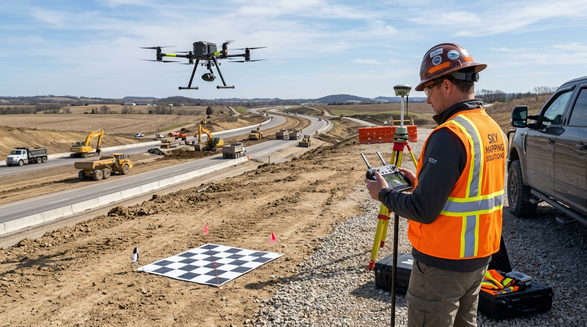

Industrial drone platforms, active LiDAR scanning sensors, and calibrated terrestrial optical & geodetic instruments.
Listed enterprise drone equipment for the company profile. Calibrated and deployed for tender-compliant aerial survey operations.

Industrial multi-rotor aerial system carrying the Zenmuse L1 payload, integrating a high-precision LiDAR module, an RGB camera with 1-inch sensor, and high-accuracy IMU. Emits real-time 3D laser pulses penetrating thick vegetation to capture classified point clouds and bare-earth terrain models.

Enterprise aerial mapping platform engineered with onboard Real-Time Kinematic satellite positioning. Delivers centimeter-level camera geotagging for rapid corridor surveys, wide-area photogrammetry, high-resolution orthomosaics, and Digital Surface Models (DSM).
Total listed survey instruments: 22 units | Calibrated working instruments: 15 units.
| Instrument Category | Brand / Make | Listed Qty | Working Qty | Engineering Application |
|---|---|---|---|---|
| DGPS / GNSS | Leica | 3 | 2 Working | Geodetic primary ground control networks, static baseline post-processing |
| DGPS / GNSS | FOIF | 3 | 1 Working | RTK ground survey, benchmark recovery, boundary demarcation |
| Total Station | Leica | 6 | 5 Working | High-precision civil alignments, metro viaduct piers, bridge as-built staking |
| Total Station | PENTAX | 2 | 2 Working | Corridor topography, site traversing, highway cross-section measurements |
| Total Station | SOKKIA | 3 | 2 Working | Detailed feature mapping, urban utility surveys, digital terrain modeling |
| Digital Auto Level | Leica | 2 | 1 Working | Sub-millimeter electronic barcode staff leveling, vertical datum transfer |
| Digital Auto Level | PENTAX | 1 | 1 Working | Temporary bench mark (TBM) networks, precision grade verification |
| Auto Level | PENTAX / Leica | 2 | 1 Working | General site elevation leveling, drainage gradients, culvert inverts |
| TOTAL INSTRUMENTS LISTED | 22 | 15 Working | Ready for immediate project site mobilization | |
Prior to site deployment, all optical electronic Total Stations, digital auto levels, and DGPS rovers undergo collimation verification, circular bubble adjustments, and electronic tilt-sensor audits. Equipment records and calibration certificates are maintained for tender audit submissions.